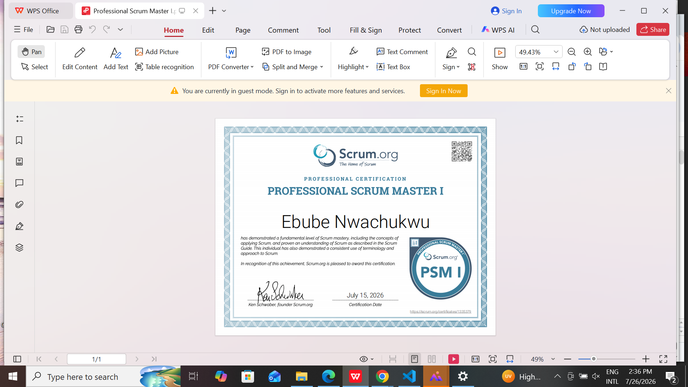
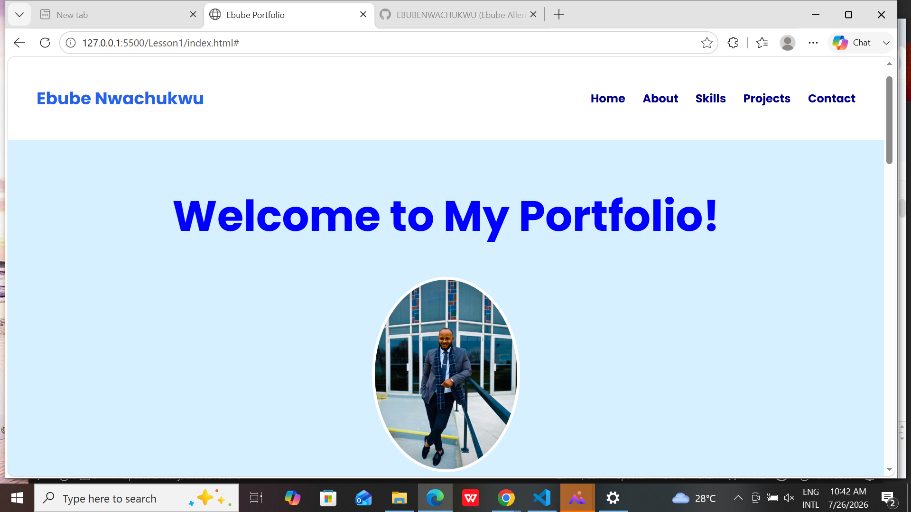
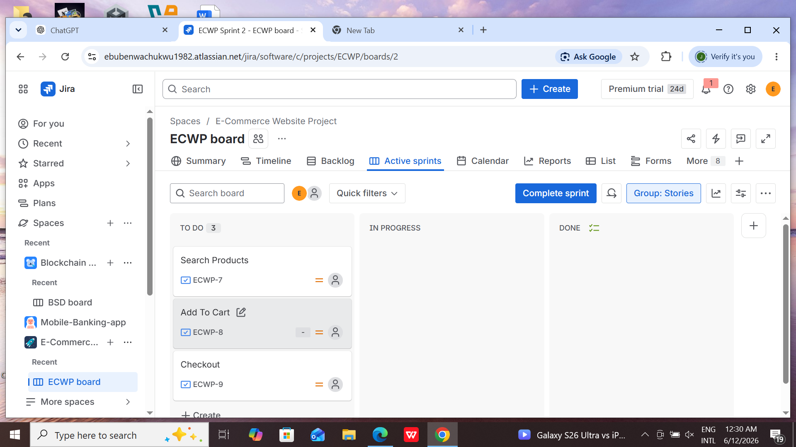
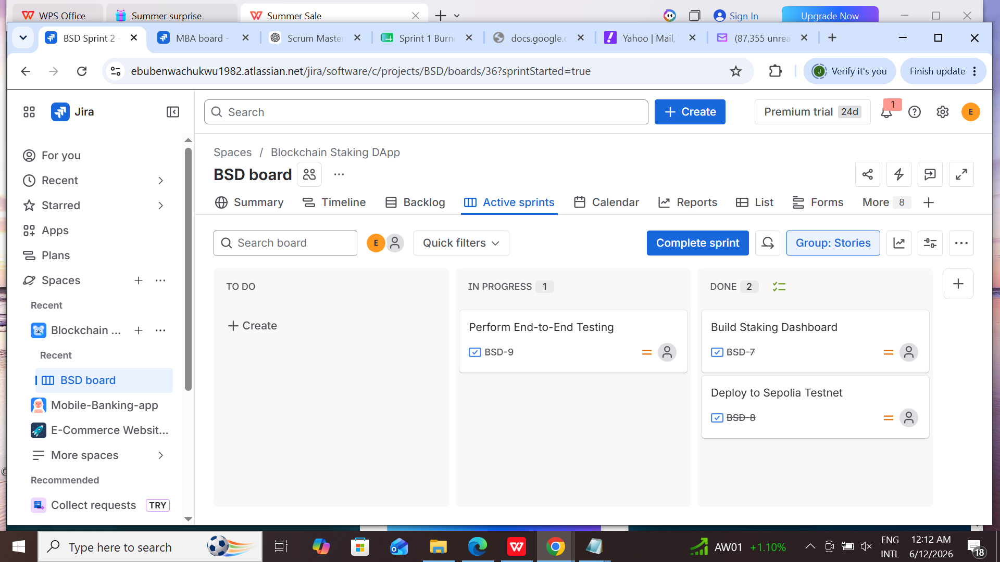
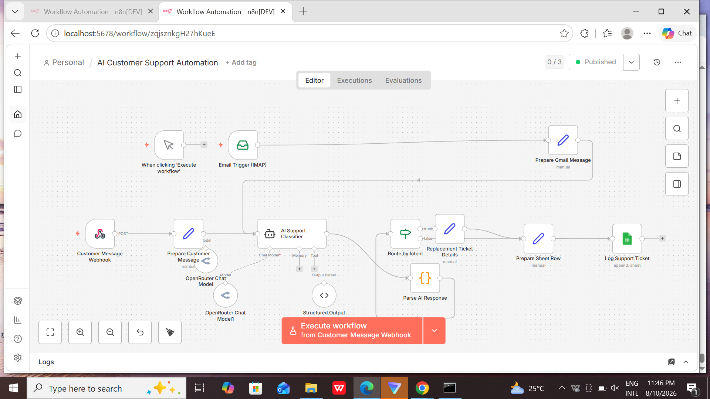
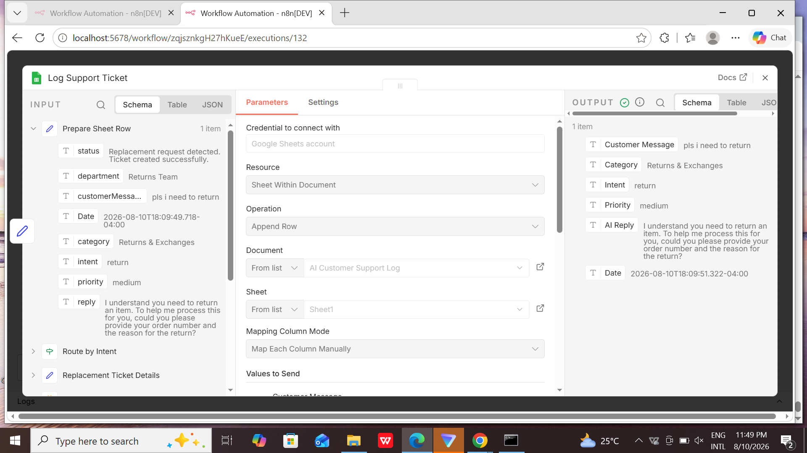
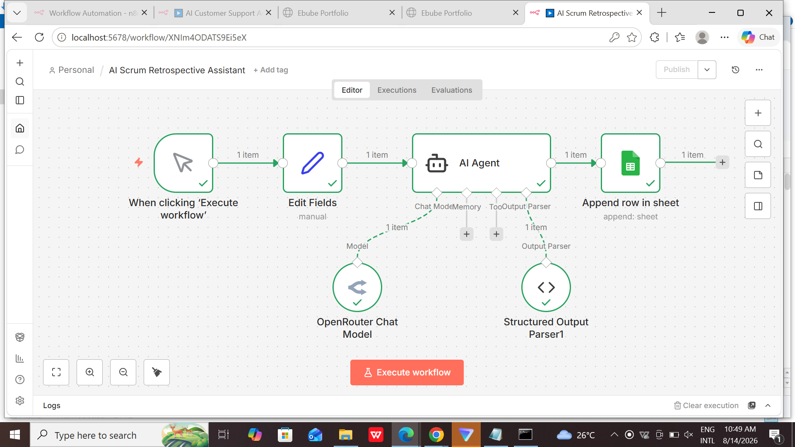

Welcome to My Portfolio!
Professional Scrum Master (PSM I) | AI Automation Specialist | Front-End Developer Experience
Professional Scrum Master (PSM I) | AI Automation Specialist | Front-End Developer Experience
I am a Professional Scrum Master (PSM I) with experience working on Agile, blockchain, web development, and AI automation projects. I have experience applying Scrum practices, managing Product Backlogs, supporting Sprint Planning, tracking Sprint progress, and facilitating continuous improvement. I also have experience with AI automation and front-end development, building practical solutions using tools such as n8n, HTML, CSS, JavaScript, and modern web technologies. I enjoy combining Scrum, technology, and automation to help teams build practical digital solutions and continuously improve their way of working.
Sprint Planning, Sprint Reviews, Retrospectives, Product Backlog Management and Scrum Events.
Building semantic and structured web pages.
Responsive layouts, animations, cards and modern styling.
DOM manipulation, events, interactive components and website functionality.
Solidity, smart contracts, Hardhat, React and Ethers.js.
n8n workflows, AI agents, structured AI outputs, APIs and workflow automation.

Issued by: Scrum.org
Professional Scrum Master I certification demonstrating knowledge of Scrum principles, practices and the Scrum framework.
View CertificateCreated and refined Product Backlog items and maintained clear priorities.
Defined Sprint Goals and helped organize Sprint Backlog items.
Used Jira and Agile metrics to monitor Sprint progress.
Practiced Sprint Reviews, Retrospectives and Daily Scrum.

A responsive personal portfolio website built using HTML, CSS and JavaScript.

An Agile e-commerce project managed using Scrum and Jira.

Managed a blockchain staking DApp project using Agile and Scrum practices. Used Jira to organize and manage the Product Backlog, plan and track Sprints, monitor progress, and document Sprint Reviews and Sprint Retrospectives.


Built an AI-powered customer-support automation using n8n. The workflow receives customer emails, analyzes customer requests using AI, classifies intent and priority, routes requests based on intent, generates an AI-assisted response, and logs structured support tickets in Google Sheets.

An AI-powered n8n automation that analyzes Sprint Retrospective feedback, identifies key themes and priorities, generates actionable recommendations, and automatically stores structured insights in Google Sheets.
Interested in working together? Feel free to connect with me.
Email Me GitHubProject description will appear here.